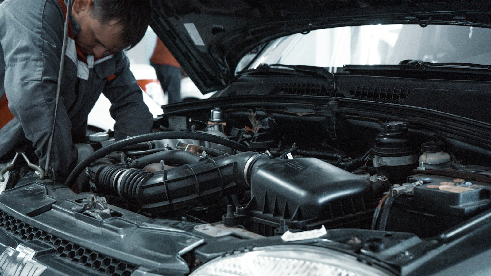
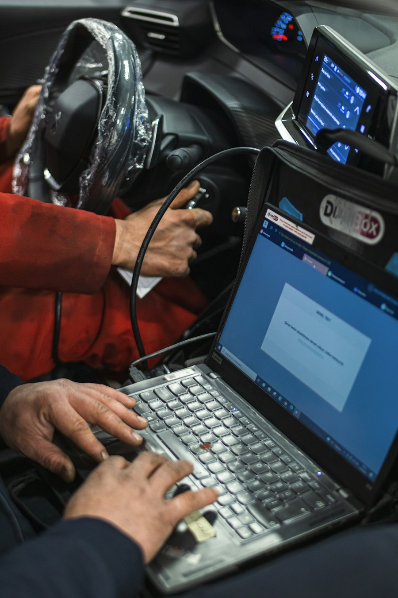

Ремонт автоэлектрики в Тирасполе
Проводка, стартеры и генераторы, инжектор и промывка форсунок, ABS, ГБО и блоки управления. Сначала находим причину неисправности, потом ремонтируем — без замены деталей наугад.

Что ремонтируем
Легковые автомобили и микроавтобусы. Стоимость ремонта называем после диагностики, когда понятно, что именно сломалось.
-
Электропроводка
Работа с электропроводкой автомобиля и её ремонт: обрывы, замыкания, утечка тока, свет, стеклоподъёмники, центральный замок.
-
Стартеры и генераторы
Ремонт стартеров и генераторов, проверка зарядки автомобиля. Если машина не заводится или садится аккумулятор.
-
Диагностика авто и мотора
Компьютерная диагностика, дефектовка неисправностей мотора, проверка меток ГРМ осциллографом.
-
Инжектор и впрыск
Ремонт системы управления бензинового (инжекторного) двигателя и системы впрыска, проверка и замена бензонасосов.
-
Промывка форсунок
Химическая и ультразвуковая промывка бензиновых форсунок: на стенде со снятием и установкой или прямо на авто без снятия.
-
Система зажигания
Диагностика и ремонт системы зажигания, проверка под нагрузкой, замена свечей, катушек и высоковольтных проводов.
-
Ремонт блоков управления
Ремонт блоков управления (компьютеров) бензиновых двигателей и блоков управления ГБО.
-
ABS и ESP
Диагностика и ремонт системы ABS, программирование и адаптация блоков ABS и ESP.
-
Газовое оборудование (ГБО)
Проверка и ремонт заводского ГБО на VW, Opel, Iveco, диагностика и настройка газового оборудования.
-
Не нашли свою неисправность?
Опишите, что происходит с машиной, — мастер скажет, возьмётся ли и сколько примерно это займёт.
Позвонить мастеру
Кто ремонтирует
Владимир Николаевич, мастер-автоэлектрик с опытом более 25 лет
Начинал, когда вся электрика в машине была на проводах и реле, и с тех пор освоил блоки управления, CAN-шины и газовую электронику. Поэтому берётся и за простую проводку, и за сложную электронику.
- Машину принимает и ремонтирует сам, без посредников
- До начала работ говорит, что сломано и сколько это стоит
- Берётся за случаи, с которыми уже побывали в других сервисах

Как добраться
Тирасполь, ул. Шевченко, 84Б. Под мостом, по дороге на Кировский.
Частые вопросы
Если не нашли ответ — позвоните, мастер подскажет по телефону.
Где находится автосервис «Норд» в Тирасполе?
Тирасполь, ул. Шевченко, 84Б — под мостом по дороге на Кировский, прямо у заправки «Шериф», через дорогу напротив школы милиции.
Сколько стоит ремонт автоэлектрики?
Цена зависит от машины и неисправности. Мастер называет стоимость после диагностики, до начала работ.
Ремонтируете газовое оборудование (ГБО)?
Да. Проверяем и ремонтируем ГБО, в том числе заводское на VW, Opel и Iveco, настраиваем газовое оборудование и ремонтируем блоки управления ГБО.
Можно приехать из Бендер, Слободзеи или Суклеи?
Да, к нам приезжают со всего Приднестровья. Позвоните заранее — договоримся о времени, чтобы не ждать.
Нужно ли записываться заранее?
Лучше позвонить по номеру 077 895 755 или написать в Telegram или Viber: мастер скажет, когда удобно подъехать.
- Часы работы
- Пн–Сб, 9:30–18:00
Воскресенье — выходной - Адрес
- Тирасполь, ул. Шевченко, 84Б
у заправки «Шериф»